Workshop 1 - Introduction to Jamovi & Descriptive Statistics
Research Methods and Statistics - T2 2026
Introduction
Welcome to the first workshop! This is a hands-on session to get you comfortable driving Jamovi, the statistics software we’ll use all trimester. Today is about the tool, not the theory: opening data, cleaning it, and producing your first descriptive statistics. You’ve already met these concepts in lectures, so this is where you put them into practice.
You can come back to this page any time you need a reminder of how to do something in Jamovi.
What you’ll do today
- Get set up with Jamovi (lab computer, your own laptop, or the cloud)
- Learn to open, save, and export your work
- Explore the dataset, fix data-entry errors, and recode variables
- Produce descriptive statistics and choose appropriate plots
This week we’re using the Titanic dataset as a friendly, familiar way to explore Jamovi for the first time. Don’t worry about the statistics being “important” yet, the goal is to find your way around.
What is Jamovi?
Jamovi is point-and-click statistical software built for students and researchers. Under the hood it runs on R (a programming language for statistics), but it shows everything through simple menus and buttons, so you get powerful analysis without writing any code.
You’ll use Jamovi to explore datasets visually, summarise data with descriptive statistics. Later in the trimester we will use it to run hypothesis tests. It lets you focus on interpretation and decision-making rather than formulas (we’ll save those for lectures).
Two short videos from datalabccon on YouTube walk through navigating Jamovi and producing descriptive statistics. Handy if you get lost in class or want to revisit later.
Getting set up
Jamovi is pre-installed on all lab computers. Search for the ‘Jamovi’ in the Windows bar, open it, and follow along, nothing to install.
You can install Jamovi for free:
- Visit jamovi.org
- Click the download button, it should auto detect for macOS or Windows.
- Version 2.7 or above will be fine
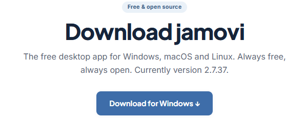
If you can’t install software, use Jamovi Cloud it runs in a browser. It works, but can be slower or a little glitchy, so install the desktop version if you can.
Get the practice file
We’ll be working with a dataset called titanic.omv.
- Dataset: titanic.omv (the omv file means it will require Jamovi to open)
Save the dataset somewhere easy to find, you will be opening it next.
The Jamovi essentials
Work through these tabs in order. Each one is a self-contained skill you’ll use constantly.
Opening data
- Open Jamovi
- Click the menu (≡) in the top-left
- Select Open ▸ This PC…
- Browse to your
.omvfile (e.g.titanic.omv)
The data opens in a spreadsheet view, ready to go.
Saving data
- Click the menu (≡)
- Select Save As…
- Choose a location and name your file
- Save with the
.omvextension (Jamovi adds this automatically)
Jamovi opens .omv, .csv, and .xlsx files. Saving as .omv keeps both your data and your analysis together in one file.
As well as saving the full .omv, you can export just your results (tables, graphs, outputs) to a clean PDF:
- Complete your analysis in Jamovi
- Click the menu (≡) in the top-left
- Choose Export ▸ PDF
- Pick a location and file name, then Save
The PDF includes everything currently shown in the right-hand results panel, but not the raw dataset.
When you open a dataset you’ll see a spreadsheet view with two key tabs.
Data tab (the default view)
- Each column is a variable
- Each row is a case or participant
- Click any cell to view or edit a value
Use this to explore your raw data, just like in Excel.
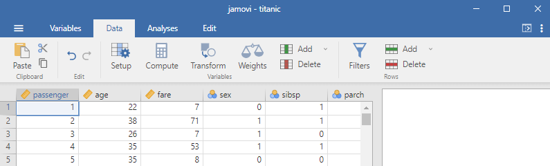
Variables tab
This shows the metadata about each variable. Here you can:
- Change a variable’s measure type (continuous, ordinal, nominal) and data type (integer, decimal, text)
- Add variable descriptions and units
- Specify missing-value codes (e.g.
NA,-,999). Left blank, Jamovi handles missing data automatically.
This is where you tell Jamovi how to treat your data which is crucial for accurate analysis.
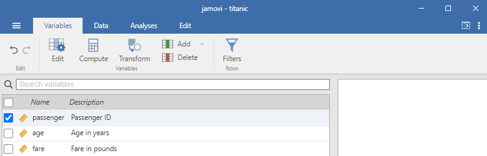
Setting the right measure type matters. Use this quick guide:
| Measure type | What it means | Example |
|---|---|---|
| ID | Unique identifier | Participant ID |
| Nominal | Categories with no order | Sex (M, F) |
| Ordinal | Ordered categories | Education (BSc, MSc, PhD) |
| Continuous | Numeric scale | Heart rate (60, 64, 59) |
Try the helper below to check your understanding.
How you enter data depends on the variable type.
Quantitative (continuous)
- Enter values as numbers, one observation per row
- e.g. a
body_massvariable in kg →57,72.4,63
Qualitative (categorical)
- Enter text labels consistently
Be consistent with categories! Jamovi treats "running", "Running", and "Runing" as three different groups.
Recoding values (turning 0/1 into meaningful labels)
- Go to the Data tab
- Click the variable, then Setup in the top ribbon
- Make sure the Measure Type is correct (e.g. Nominal)
- In the Levels column, rename each value (e.g.
0→ male,1→ female)
Using filters (focusing on a subset of the data)
- Go to the Data tab and click Filters
- Create a condition, for example
age > 50orsex == "female"
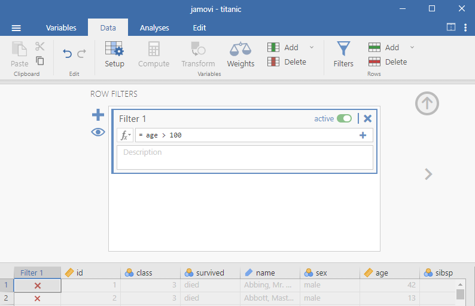
age > 100 into the formula box.| Symbol | Meaning |
|---|---|
== |
equal to |
!= |
not equal to |
> / < |
greater than / less than |
>= / <= |
greater/less than or equal to |
Tick or untick filters to activate them, and use the eye icon (bottom-left) to show or hide rows that don’t meet the condition.
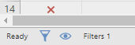
Generating descriptive statistics
Descriptive statistics are the first step in any analysis. They help you understand your sample at a glance, spot data-entry errors, check distributions and variability, and catch problems before running anything more complex.
| For continuous variables | For categorical variables |
|---|---|
| mean, median, SD, min, max | counts (frequencies), percentages |
- Open Jamovi and load your dataset
- Go to the Exploration tab in the top menu
- Select Descriptives
- In the left panel, move your variable(s) into the Variables box (right panel)
- Split by divides results by a group (e.g. by
sex)
- Split by divides results by a group (e.g. by
- Choose your statistics under Statistics (mean, SD, etc.)
- Results appear instantly in the right-hand Results panel
- To run something else, go to the Analyses tab and pick your next test, it’s added below the last one in the Results panel
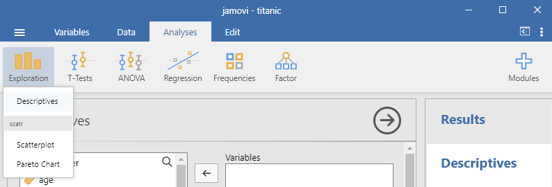
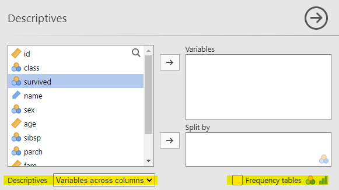
Frequency tables: tick Frequency tables in the Descriptives options to see percentages for each level of a categorical variable.
Table layout: use the Variables across dropdown to flip whether variables run in columns or rows which is handy for group comparisons.
Tasks for you to do
Work through these in Jamovi, then check your answers as you go, each task has a small answer box. Type (or select) what you found and press ✓ Check. You’ll get instant feedback, and a hint appears if you’re stuck after a couple of tries.
The full Worked answer for each task is locked until you answer correctly, and if you’re really stuck, a reveal option appears after three attempts, so have a genuine go first. A fully worked version (with screenshots of every output) is released after all lab classes finish for the week.
Task 1 — Recode the labels
- Recode
embarkedassuming0 = cherbourg,1 = queenstown,2 = southampton - Recode
survivedassuming0 = died,1 = survived
Once you’ve recoded embarked, run a frequency table (Descriptives ▸ tick Frequency tables) and enter the counts below.
How many passengers embarked at each port?
embarked into Variables,
and tick Frequency tables at the bottom. The counts column is what you need.Worked answer locked. Answer correctly above to unlock it.
Part a) Once recoded, a frequency table of embarked gives:
| Embarked | Counts | % of total |
|---|---|---|
| Cherbourg | 270 | 21% |
| Queenstown | 123 | 9% |
| Southampton | 914 | 70% |
Part b) survived simply becomes died (0) and survived (1). Recoding to meaningful labels makes every later table and plot far easier to read.
Task 2 — Find the obvious errors
Check the class and age variables for obvious errors and correct them where needed. Hint: look at the minimum and maximum values.
Run Descriptives on class and age. What are the maximum values?
Worked answer locked. Answer correctly above to unlock it.
Running Descriptives on both variables:
| N | Missing | Mean | Median | SD | Min | Max | |
|---|---|---|---|---|---|---|---|
| Class | 1309 | 0 | 2.30 | 3 | 0.839 | 1 | 4 |
| Age (y) | 1309 | 0 | 29.64 | 28 | 13.99 | 0 | 224 |
Both maximums are impossible: there are only 3 classes on the ship (so 4 is a typo), and no-one lives to 224 years. These are data-entry errors you’d remove or correct before any real analysis.
Task 3 — Which variable has the most missing data?
Tick the Missing box in Descriptives. Which variable has the most missing data?
Worked answer locked. Answer correctly above to unlock it.
Tick the Missing box in Descriptives to get a missing-data count for every variable:
| Variable | Missing |
|---|---|
| Passenger, Age, Fare, Sex, SibSp, ParCh, Class, Survival | 0 |
| Embarked | 2 |
Embarked has the most missing values (2); every other variable is complete.
Task 4 — Five-number summary
Generate a five-number summary for the fare variable, split by survived. A five-number summary is Min – Q1 – Median (Q2) – Q3 – Max, the table version of a box plot.
From your split output, enter the median fare for each group:
fare in Variables and
survived in Split by. Under Statistics, tick
Median and the Percentiles / Quartiles options (25th, 50th, 75th).Worked answer locked. Answer correctly above to unlock it.
| Survival | Min | 25th (Q1) | 50th (Median) | 75th (Q3) | Max |
|---|---|---|---|---|---|
| Died | 0 | 7.0 | 13.0 | 27.0 | 512 |
| Survived | 0 | 12.0 | 26.0 | 57.0 | 512 |
Notice survivors paid more on average across every quartile. An early hint that fare (and class) relates to survival.
Task 5 — Choose appropriate visualisations
Create visualisations for (a) age × survival and (b) sex × survival. Choose the right table/graph for each variable type — frequency tables, histograms+density, box-plots, or bar-plots. Try building each option in Jamovi (Descriptives ▸ Plots) before answering below.
The lesson here isn’t “make a graph”, it’s matching the plot to the variable type. The best plot for age is not the best plot for sex.
(a) Age × Survival
age is continuous. Which plot best shows how age relates to survival?
Worked answer locked. Answer correctly above to unlock it.
age is continuous, so:
A bar chart of means is a poor choice. The two groups look almost identical because everything about the distribution (spread, shape, outliers) is hidden behind one mean (bar) per group:
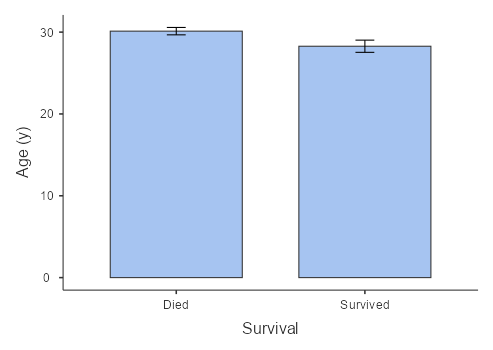
A histogram + density is better. Now you can see the shape of each group, though the impossible 224 outlier stretches the x-axis and squashes the real data into the left side:
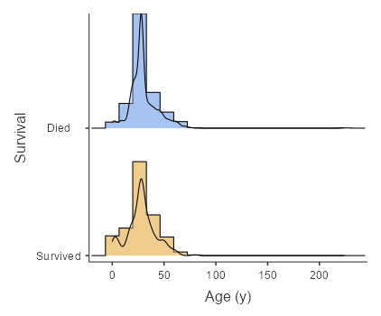
224 error distorts the axis (could filter this to improve).A box-plot is best. medians, quartiles, spread and outliers for died vs survived, all in one view. You can even see the 224 data-entry error sitting alone at the top; filter it out (ID 656) and the comparison becomes clean:
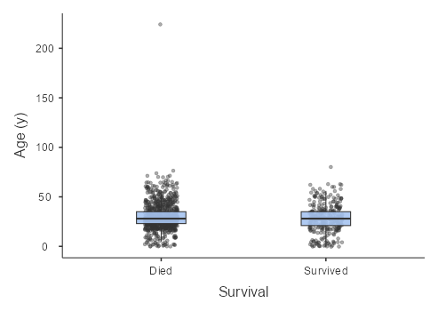
Takeaway: continuous data deserve a plot that shows the whole distribution and/or individual data points, and cleaning errors matters.
(b) Sex × Survival
sex is nominal (binary). Which plot best shows how sex relates to survival?
Worked answer locked. Answer correctly above to unlock it.
sex is nominal-binary, so:
A box-plot fails: Jamovi will draw one, but a “median sex” of 0 or 1 and boxes stretched between the two values are meaningless. This is a classic sign of treating a categorical variable as continuous:
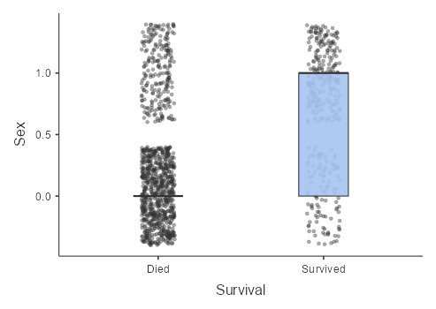
A density plot also fails: the smooth curves imply values between male and female that don’t exist. All the real data is piled at exactly 0 and 1:
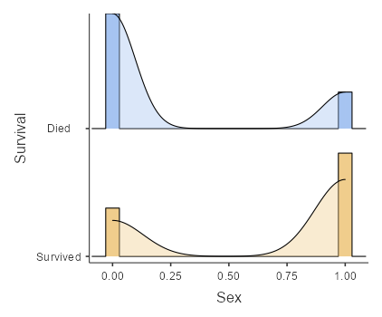
A grouped bar / counts plot is best: counts of male/female within died/survived is exactly what nominal-binary data calls for, and the pattern (most men died; women were far more likely to survive) is instantly readable:
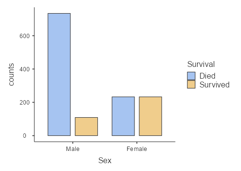
Takeaway: categorical data want counts and groups, not distribution plots. Always pick the visualisation that suits the data and the research question (in this case, might there be a relationship between sex and survival?).
How this links to assessment
There’s no standalone Jamovi assignment, but:
- Your online exams may include questions referencing Jamovi output or techniques
- You’ll use Jamovi throughout your Portfolio of Evidence activities
The more you explore, the easier Jamovi gets. It’s designed to be intuitive. Don’t be afraid to click around and try things. Many free practice datasets (.csv) are at kaggle.com/datasets if you want to apply each week’s skills to new data.
That’s it for Jamovi today.
Hopefully it didn’t feel too long…
Now get ready for your practice attempt for the group Portfolio of Evidence activity (20mins):
Put all phones, laptops, electronic devices away
Turn off the lab computers
You can have a calculator, ruler, pen
You can write/draw on the exam sheet
Please include all names and s numbers for all group members
1 mark for first correct scratch, 1/2 mark for second, 1/4 for third, 0 for forth and fifth
Work together as a team :)
Getting help
During the session I’ll circulate to help, don’t be afraid to ask. After the workshop, revisit this page, check your module notes for interpretation help, or post in the Microsoft Teams channel, email me, or book an office hours meeting.
References
[1] The jamovi project (2024). jamovi. (Version 2.6) [Computer Software]. Retrieved from https://www.jamovi.org.
[2] R Core Team (2024). R: A Language and environment for statistical computing. (Version 4.4) [Computer software]. Retrieved from https://cran.r-project.org.
[3] Kaggle (2024). Titanic - Machine Learning from Disaster. [Data set]. Retrieved from https://www.kaggle.com/c/titanic.
Document prepared by Aaron Bach using Quarto.